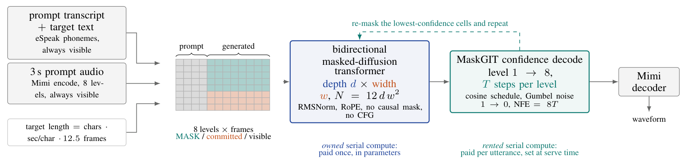
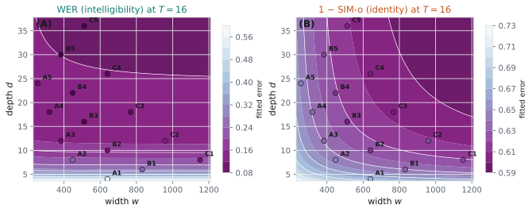
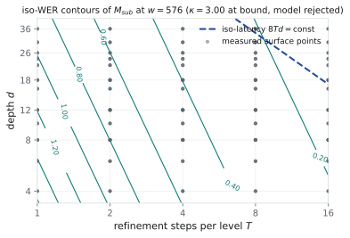
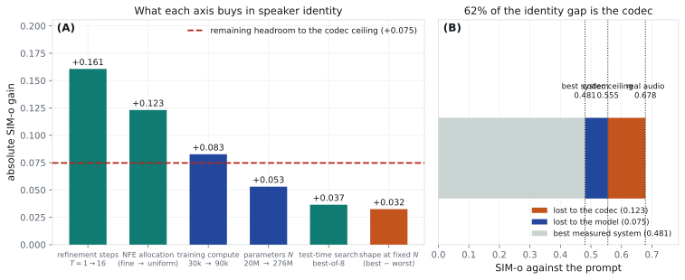
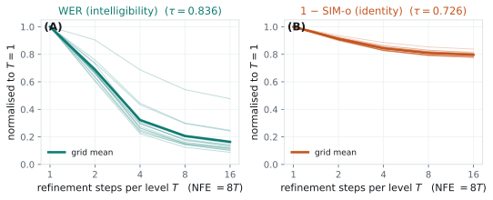

Refinement Buys Intelligibility, Search Buys Identity:
What Test-Time Compute Buys in Masked-Diffusion TTS
*Work done outside of Blackstar Inc. **Work done at Smallest AI.
NeurIPS 2026 Workshop on Diffusion Language Models (DiffuLM), Sydney Poster
Abstract
A diffusion language model buys sequential computation twice: depth, paid once in parameters, and denoising steps, rented per utterance at serve time. We ask whether the rented kind helps every capability equally. We train an iso-parameter width–depth grid of 15 masked-diffusion codec TTS models (3 seeds, 19–133 M non-embedding parameters) on 2,000 h of Emilia-EN and sweep the refinement budget T at inference only, evaluating cross-sentence zero-shot synthesis on 400 items from 174 held-out speakers. Our central result is model-free and referenced to floors we measure rather than to zero: the word error of an ASR system on the real recordings, and the speaker similarity of a codec round trip. Against those floors, refinement from T=1 to T=16 closes 86.2% of the reachable intelligibility range but only 46.4% of the reachable identity range, a 1.86× asymmetry that holds between 1.68× and 1.86× under every monotone reparameterisation of the error we tried. Retraining the same runs to 3× and 6× the schedule attenuates that factor monotonically (1.84×, 1.36×, 1.23×) while never reversing it, because refinement’s intelligibility share saturates (−0.09 pp across the last doubling, and −0.06 pp under a second recogniser from a different family) while its identity share keeps rising by +7.4 pp. The two capabilities have different bottlenecks, and we therefore offer the ordering, not the factor, as the result. We also report the pre-registered power-law fit, and we report that the step-exponent contrast it yields (Δτ = τWER − τSIM = 0.110) changes sign under those same reparameterisations: it is a property of the error coordinate, and we therefore decline to build the paper on it. The limit is on what refinement buys, not on what inference buys. At a matched number of function evaluations (NFE), best-of-K search moves speaker similarity where refinement cannot, and 4 speaker-encoder families outside the selector’s lineage agree, with per-item win rates of 64.6–79.0% and every interval above one half. Depth and steps are not interchangeable: the substitution form B(d Tκ)−β fits worse than the separable form by ΔAICc = +69.3. Finally, 62% of the remaining identity gap belongs to the codec, not the model, so most of what identity has left to gain is not the generator’s to win.
Key figures





Key results
| Result | Value | Paper |
|---|---|---|
| Share of the reachable intelligibility (WER) range closed by refinement, T=1→16 | 86.2% [82.8, 89.1] | Table 1 |
| Share of the reachable identity (SIM-o) range closed by refinement, T=1→16 | 46.4% [45.0, 47.8] | Table 1 |
| Ratio of the two shares | 1.86× [1.82, 1.90] | Table 1 |
| The same ratio under monotone reparameterisations of the error (log(1+err), √err, err2) | 1.68× to 1.86× | Table 2 |
| The same ratio after 30k / 90k / 180k training steps (9 runs retrained to 3× and 6× the schedule) | 1.84× / 1.36× / 1.23× | Table 3 |
| Change in refinement’s shares from 90k to 180k steps: intelligibility (Whisper, wav2vec2) and identity | −0.09 pp, −0.06 pp; +7.4 pp | Table 3 |
| Share of the remaining identity gap lost in the codec | 62% | Figure 3 |
| Best-of-K search over refinement at matched NFE: per-item win rate under 4 speaker-encoder families outside the selector’s lineage | 64.6–79.0% | Table 6 |
| Substitution form B(d Tκ)−β against the separable form, ΔAICc (WER / SIM-o) | +69.3 / +71.3 | Table 11 |
| Pre-registered step-exponent contrast Δτ, which changes sign in 3 of the reparameterisations | 0.110 [0.092, 0.131] | Table 2 |
The floors are measured: Whisper-large-v3’s word error on the real recordings (0.0345) and the speaker similarity of a Mimi round trip of the real target with no model in the loop (0.5554, the codec ceiling). Brackets are 95% bootstrap intervals; every search-win-rate interval lies above one half.
Research notes
Working documents from the study, kept as they were written. They predate the camera-ready paper; for the current results, read the paper.
- Motivation: the pre-registration-era theory and motivation page. Its headline claim was later withdrawn.
- Protocol: the v1.0 experimental protocol (thresholds, gates, pivots, statistics, deliverables), frozen before any training run.
- Implementation: what was built and run, every implementation choice the protocol left open, and reproduction commands.
- v1.0 results: the measured surface, fitted laws with intervals, the declared outcome class and the gate history.
- v1.1 extensions: steps past T=16, NFE allocation across codebook levels, a fourth parameter budget, a training-compute control and a robustness panel.
- v1.4 coordinate audit: why Δτ was demoted from the headline, and the floor-referenced contrast that replaced it.
- Pre-registration: the v1.0 pre-registration and its addenda (v1.1, v1.2, v1.3, v1.5).
BibTeX
@inproceedings{mathur2026refinement,
title = {Refinement Buys Intelligibility, Search Buys Identity: What Test-Time
Compute Buys in Masked-Diffusion {TTS}},
author = {Mathur, Nityanand and Sayed, Hamees and Singh, Ayush Pratap},
booktitle = {NeurIPS 2026 Workshop on Diffusion Language Models: Foundations,
Efficiency, and Reasoning (DiffuLM)},
year = {2026},
url = {https://openreview.net/forum?id=E659lrDKOx},
note = {Poster}
}